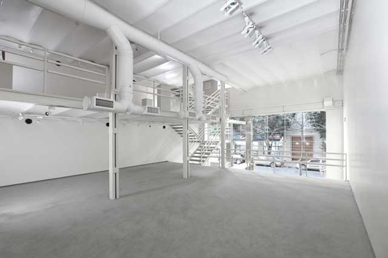
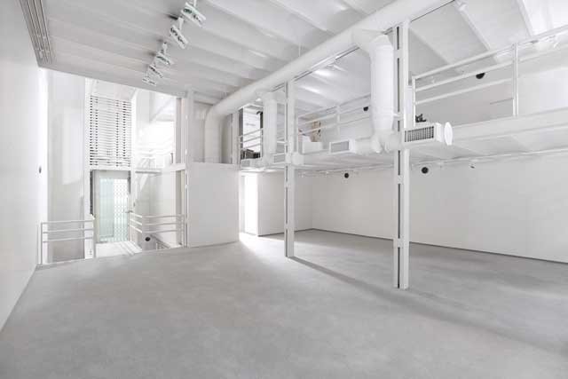

Acerca de PRAXIS
Praxis es una galería de arte fundada en Buenos Aires, en el año 1977, por Miguel Kehayoglu actualmente cuenta con sede en Chelsea, New York. Su objetivo es relevar y difundir el trabajo de talentosos artistas latinoamericanos contemporáneos.
Arenales 1311 (1061) tel 48126254
Buenos Aires, Argentina
Hazte fan Seguir @praxis praxis-art.com  